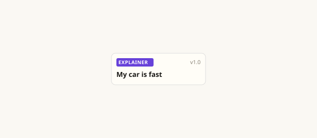
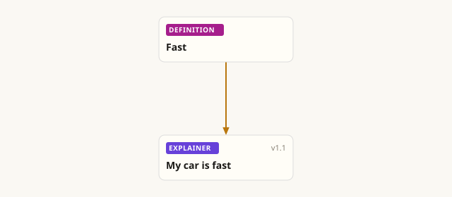
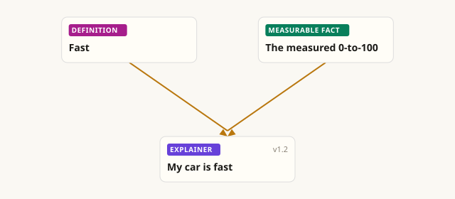
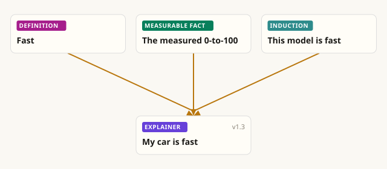

Agora — read and write living articles
Unfold the reasoning, understand the author and their references, and engage with them — or the community — to improve the article, or refute it.
One article, getting better edition by edition

Edition 1.0
My car is fast.
🧐 « Fast » — what does that even mean?

Edition 1.1
My car is fast. By « fast » I mean reaching 100 km/h in under 5 seconds (definition).
🧐 Fine. And do you have a measurable fact?

Edition 1.2
My car is fast. By « fast » I mean reaching 100 km/h in under 5 seconds (definition). It does it in 4.2 s (the timing) — so it is fast.
🧐 And the model in general, not just yours?

Edition 1.3
My car is fast. By « fast » I mean reaching 100 km/h in under 5 seconds (definition). It does it in 4.2 s (the timing) — so it is fast. And it's not a one-off: several tested units were fast too, so the whole model is fast (generalization).
Soon, you'll be able to go further
Answer the author
The last step — going from your car to the whole model — is a leap, not a certainty: that's exactly where a reader will soon be able to answer the writer, refine it, or refute it.
A date, a prediction
An article can carry a date: a prediction that reality will confirm or settle when the time comes.
Your system of thought
Say which premises you accept, and discover other articles that could complete your system of thought — or put it to the test.
What does it change?
You stay in contact with the author. And far better than in social-media comments, you see what others really think — above all when an objection actually moves the article forward.